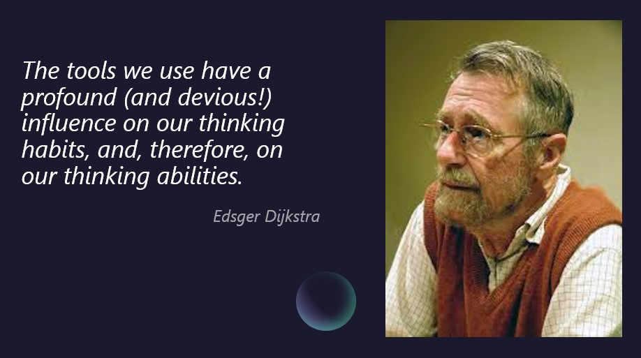
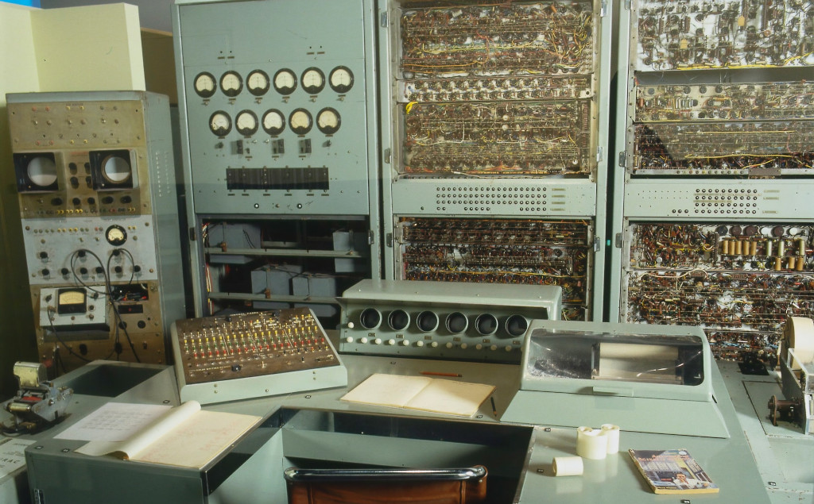
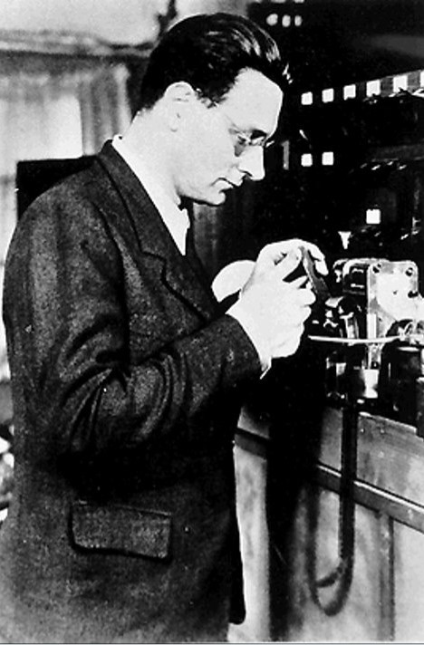
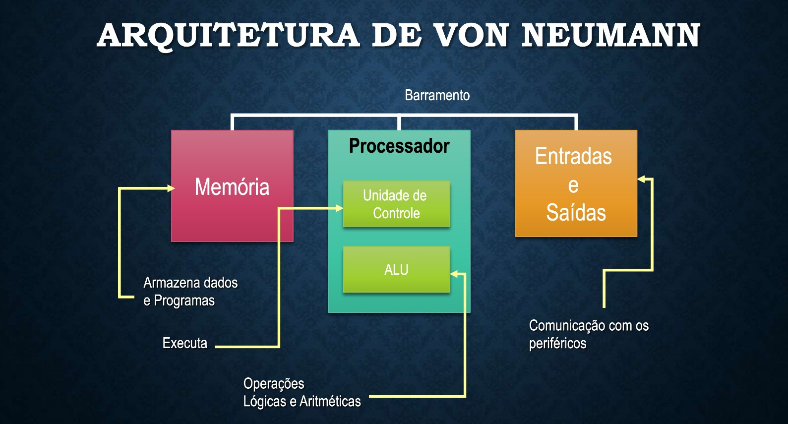

Ling. Programação e Compiladores
Frank Coelho de Alcantara - 2021
Professor

Pai, marido, professor, engenheiro eletricista especializado em eletrônica,
Mestre em Ciência Gestão e Tecnologia da Informação, CTO da Tefway Tecnologias, consultor e curioso.
Muito Curioso!
Estou no Linkedin -
e gostaria de tê-los na
minha rede de relacionamentos.
Introdução

Introdução
Veremos um pouco da história da computação, os conceitos de compilação e interpretação e a matemática que suporta a criação de linguagens de programação.
Vamos tratar de algoritmos criados para entender a linguagem que os programadores usam para criar seus algoritmos e resolver problemas.
Vamos entender como usar compiladores e interpretadores para criar soluções incríveis.
Compiladores e Interpretadores
Compiladores são programas que pegam um texto escrito em uma linguagem de programação e o transformam em linguagem de máquina.
Interpretadores são programas que "executam", interpretam, um texto escrito em uma linguagem de programação.
Interpretadores são compiladores que não entregam um produto persistente.
Um Pouco de História

Foto de Museums Victoria on UnsplashA base matemática
David Hilbert, Wilhem Ackermann e Entscheidungsproblem, O Problema da Decisão (1928): todos os enunciados matemáticos podem ser provados?
Alonzo Church e o Cálculo Lambda.
Kurt Gödel, Jaques Herbrand e o cálculo recursivo.
Alan Turing e On Computable Numbers, with an Application to the Entscheidungsproblem.
Os primeiros anos
O conceito de linguagem de programação começou a ser construído a partir de 1946 com a criação de Plankalkül por Konrad Suze, um engenheiro alemão que criou o primeiro computador com relés e com a sua própria linguagem de programação, Plankalkül.
Só a versão 4 das suas máquinas sobreviveu a Segunda Guerra Mundial e seu trabalho só foi publicado em 1972.
Grace Hopper
Podemos correr o risco de afirmar que o compilador, foi criado em 1951 pela equipe liderada por Grace Hopper enquanto trabalhava na Remington Rand, e chamado de A-0.

Source Flickr: Grace Hopper and UNIVAC
John Von Neumann
Lisp, Fortran e Cobol
Em 1956 John McCarthy cria o Lisp - LISt Processing graças a uma dúvida de Graham em aula
Em 1957 John Backus, trabalhando na IBM, criou o Fortran (FORmula TRANslation).
Em 1959 Grace Hopper, apresenta o Cobol - COmmon Business Oriented Language.
Em 1962 Ole-Johan Dahl e Kristen Nygaard criam a Simula em Oslo.
BNF e Algol
John Backus, criou uma linguagem de programação apenas para provar que um processo de descrição, por meio de uma linguagem específica, poderia ser usado para criar uma linguagem de programação, esta meta linguagem recebeu o nome de Backus Normal Form.
O ALGOL-60, marca a primeira vez em que uma linguagem baseada em uma notação formal, Backus-Naur-Form¸ foi usada para definir uma linguagem de programação.
Os anos 1970, o Basic e o C
No dia 1º de Maio de 1964, aproximadamente as 4:00h foi executado o primeiro programa em Basic, fruto do trabalho de John G. Kemeny e Thomas E. Kurtz, no Dartmouth College.
O C, criado em 1972 por Dennis Ritchie nos laboratórios da Bell para ser utilizada no Sistema Operacional Unix desenvolvida sobre outra linguagem a B, que fora desenvolvida por Ken Thompson para permitir o porte do Unix para o computador PDP-11.
História da linguagem C
| LINGUAGEM | ANO | DESENVOLVIDA POR |
|---|---|---|
| Algol | 1960 | International Group (Backus-Naur) |
| BCPL | 1967 | Martin Richard |
| B | 1970 | Ken Thompson |
| C | 1972 | Dennis Ritchie |
| K & R C | 1978 | Brian Kernighan & Dennis Ritchie |
| ANSI C | 1989 | Comitê ANSI |
| ANSI/ISO C | 1990 | Comitê ISO |
| C99 | 1999 | Comitê de Padronização da ISO |
| C18 | 2018 | Comitê de Padronização da ISO |
O C++ e o Java
Em 1984 que é publicada a primeira versão do C++ por Bjarne Stroustrup, a partir da tese desenvolvida em seu doutorado no ano de 1979, dando um impulso significativo as linguagens de programação orientadas a objeto.
Em 1991 James Gosling lidera a equipe da Sun que cria o Java. Um código podendo ser executado em qualquer plataforma.
a WeB e a Computação Quântica
E chegamos a era da web, Rasmus Lerdorf com o PHP (1994), Guido Van Rossum com o Python (1989) e Brendan Eich com o Javascript (1995) movimentam a Internet permitindo a expansão da web e a criação de tecnologias remotas e interativas.
Na segunda década do Século XXI, chegamos as linguagens voltadas para a computação quântica: CIRQ, do Google; Q# da Microsoft e Q da IBM
Mensagem para você
Onde você estará em cinco anos? Quem será? O que estará fazendo?
Clique Aqui e deixe uma mensagem para o seu eu futuro.
Não se identifique e use interpretadores2021@1. Vocês têm 10 minutos para isso. A senha vai expirar.
Eu vou manter um registro disso até 2026, online a mensagem é sua e para você, mas qualquer um poderá ler.
Photo by Benjamin Davies on UnsplashLinguagem de Máquina
Usamos máquinas para resolver problemas desde que o primeiro homem utilizou um graveto para pegar uma fruta ou matar um animal.
Apenas no Século XX conseguimos nos comunicar com as máquinas e conseguimos dizer o que queremos que elas façam.
E ainda precisamos de uma linguagem que só elas entendem.
Hardware
O conjunto formado pela CPU, memória e dispositivos de entrada e saída, responsável pela execução direta de todas as instruções do algoritmo que irá resolver um problema específico.
Este conjunto de dispositivos entende apenas os símbolos 0 e 1 (zero e um). Um conjunto de símbolos, ou alfabeto, definido por: $$\Sigma_{bin} = \left\{ 0,1 \right\}$$
O formalismo da máquina
A linguagem de máquina é a mais formal e específica linguagem envolvida nos processos de computação. Isso a torna praticamente impossível de usada por seres humanos.
A linguagem Assembly é apenas uma coleção de mnemônicos organizada sobre uma sintaxe e semânticas simples que representam de forma mais adequada ao ser humano, as instruções em binário que queremos que a máquina execute.
Linguagem de maquina
O Assembly não é linguagem de máquina. Só para enfatizar, vou repetir: o Assembly não é linguagem de máquina.
Sequer o código hexadecimal, baseado no alfabeto $$\Sigma_{hex} = \{0,1,2,3,4,5,6,7,8,9,a,B,C,D,E,F\}$$pode ser chamado de linguagem de máquina.Por enquanto, apenas o binário pode ser chamado de linguagem de máquina.
Um Problema de Montagem
O Assembler
O Assembler traduz uma linguagem de baixo nível, formal e desenhada para uso humano em código de máquina.
Ainda que a linguagem Assembly, objeto do Assembler, seja muito simples, e muito próxima do nível da linguagem de máquina, ela tem estrutura léxica, sintática e semântica como qualquer outra linguagem de programação.
Assembler em tradução livre: montador.
Assembler compila?
Compiladores e interpretadores são estruturas software, ou hardware, que fazem a tradução de uma linguagem formal e regular, criada para uso humano em uma linguagem de máquina.
O Assembly é uma linguagem formal e regular que precisa ser traduzida em linguagem de máquina.
Sim, o Assembler é um tipo, muito simples, de compilador.
Por que Compilar Assembly?
Cada arquitetura de hardware, x86_64, ARM, RISC-V tem as suas próprias características. Desta forma, o mesmo conjunto de zeros e uns pode significar coisas completamente diferentes em máquinas diferentes.
Isto faz com que o Assembler precise entender a arquitetura da máquina para criar os binários corretos e adequados.
Originalmente cada arquitetura possuia seu próprio Assembler
Uma passagem
As primeiras versões de Assembler eram pouco mais que uma tradução um a um de mnemônico para binário.
One-pass Assembler: um Assembler que lê o texto contendo o código fonte e transforma em código de máquina varrendo este texto, do começo ao fim, uma única vez.
O código precisava ser escrito na mesma ordem dos binários necessários ao funcionamento da máquina.
Duas passagens
Two-pass Assembler: como no nome diz, lê o arquivo contendo o código fonte duas vezes.
Isso permite o uso de instruções saltos, melhorando o processo de redação de código fonte e diminuindo erros.
A primeira passagem traduz tudo, a segunda coloca todos os binários gerados na ordem correta de execução.
Macro Assembler
Macro-Assembler: um tipo de Assembler que permite o uso de macros.
Uma macro, neste contexto é equivalente a uma sub-rotina que, por sua vez, representa um fragmento de código que é escrito uma vez e pode ser reutilizado muitas vezes.
Isto permite incluir mais flexibilidade da escrita de código.
Cross Assembler
Cross-Assembler: um Assembler capaz de rodar em uma arquitetura enquanto gera código de máquina que será utilizado em outra arquitetura.
Esta é a flexibilidade que permite desenvolver programas para qualquer arquitetura a partir da sua própria arquitetura.
Os Assemblies definidos para este tipo de Assembler, mais tarde, seriam classificados como linguagens de mais alto nível entre os Assembly.
Assembler - processo de tradução
- Verificar a sintaxe de cada instrução, parar e emitir uma mensagem de erro todas as vezes que encontrar um erro na forma de uma instrução;
- Determinar se o tamanho da instrução e do dado que ela está manipulando para reservar espaço de memória, ou registrador, para seu uso;
- Determinar os endereços de labels ou de seções de código;
- Criar uma tabela de símbolos contendo as definições de cada label e seu endereço em memória.
As linguagens de programação
As linguagens de programação são linguagens formais e regulares, desenvolvidas para uso humano criadas para explicitar as funcionalidade mínimas para tornar possível que um pobre ser humano possa escrever um algoritmo, entender aquilo que está escrevendo.
Com características próprias especificamente criadas para tornar possível o processo de tradução em linguagem de máquina.
As linguagens de programação são muito simples.
Material de apoio
Baixe o material de apoio clicando aqui
Obras Citadas
BERGIN, T. J. 50 Years of Army Computing from Eniac to MSRC. Aberdeen, MD. USA: Army Research Laboratory, 1996.BÖHM, C.; JACOPINI, G. Flow diagrams, turing machines and languages with only two formation rules. Communications of the ACM, v. 9, n. 5, p. 366-371, 1966.
DAVIS, J. S. File:Commodore Grace M. Hopper, USN (covered).jpg. Wikipedia, 1984. Disponível em: DIJKSTRA, E. W. A Case against the GO TO Statement. Commun. ACM , v. 3, n. 1, p. 147-148, Mar. 1968. KNUTH, D. E. Structured programming with go to statements. ACM Computing Surveys (CSUR), v. 6, n. 4, p. 261-301, 1974.
MENABREA, L. F. The Analitical Engine Invented by Charles Babbage. Fourmilab, 1842. Disponível em: http://www.fourmilab.ch/babbage/sketch.html#NoteG. Acesso em: 20 Fev. 2020.
NAUR, P. et al. Revised report on the algorithmic language Algol 60. Communications of the ACM, v. 6, n. 1, p. 1-17, 1963.